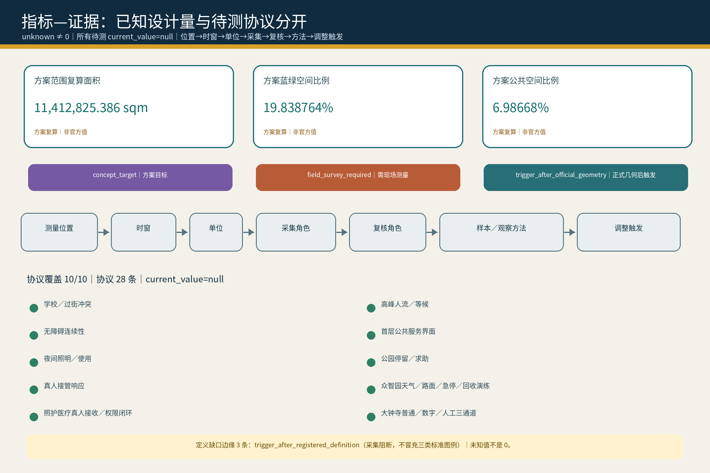

一天与真实问题
15:30，实体交接前由学校具名真人持责；具名接应人明确完成实体接收后才转责。21:40，屏幕退场，家庭、物业、社区各守原责，以固定电话、纸面联络、普通／应急照明和机械门闭合回家链。
15:30与21:40是设计探针：孩子从校门走向社区，停电后同一个家庭仍要回家。普通通行、具名真人接责、机械旁通与可关合恢复先于智能。
design proposal / proposed collaboration / unknown，不得解读为已签约、已拨款或已实施。source:AGENT-TASKBOOK standard:PROJECT-AGENT-OPEN-CALL-TASKBOOK| 任务书要求 | 本方案的可评成果 | 既有 P / SCN 回链 | 责任与停止条件 |
|---|---|---|---|
| 百年京张文化带 | 京张公共脊柱把铁路工程史、维修史、开放贡献与 AI 新文化组织为可纠错、可撤下、可离线阅读的公共序列 | P01 / P07 / P09 / P10；SCN-JZ-01/02/03 | 历史来源、文保边界、无障碍与消防未核即不进入工程深化；公共导视不替代法定安全标识 |
| 都市 AI 生活体验带 | AI 原点“家”＋大钟寺“窗”：学习、接送、照护、停电、访问与退出均由个人/私人 Agent 发起有限任务 | P04–P10；SCN-AIO-* / SCN-DZS-* | 普通无数字线先成立；孩子拒绝、无人接责、权限越界或退出失效即停止 |
| AI 融合创新带 | 众智园“工坊”把机器天气、维修复测、端侧算力与结果级数据交付放入可隔离、可归港的城市试验底盘 | P01–P03 / P10；SCN-ZZY-01/02/03 | 硬急停、隔离、维修、责任、保险/资质与公众边界任一未闭合即不开放 |
| AI 全栈自主创新体系 | 受控测试→故障诊断→维修→复测→结果级交付→社区能力回流 | P01–P03 / P10 | 原始个人数据不跨任务继承；高风险环节必须由合格真人复核 |
| 世界级 AI 创新生态 | 三区两翼＋区域协作机制；土地、空间、产业、资金、人才、算力、数据、场景8 类交换逐项设门 | P01–P10 / 12 SCN | 未核主体、预算与合作全部保持 proposed / unknown |
| AI+场景赋能新范式 | 12 个注册场景＋游客、社区经济、智慧课堂三条生活回环 | 12 SCN | 场景开放以普通服务不退化、可暂停、可退出为前提 |
| 智能化 AI 活力城市 | 五套城市网络同时承载日常生活、公共空间、测试维修、交通与能源/通信恢复 | P01–P10 | AI 失效时纸面、电话、机械旁通与真人服务继续成立 |
| AI 治理全球话语权 | “城市只接一次任务，不接一个完整的人”：许可、具名接责、最小披露、硬停止、完整退出形成可审计城市协议 | P04–P10；M-PSS-* | 不以中央总库、持续画像或默认同意换取便利；争议/事故可转人工并关权 |
| 节点 | 主角色 | 主要提供 | 主要接收 | 准入 / 治理 / 退出 |
|---|---|---|---|---|
| 众智园｜工坊 | 受控研发、测试、维修、复测 | 测试场、维修后场、可核算力/设备能力、结果级验证 | 来自社区/访问/产业的明确测试任务、故障件、复现条件 | 项目级许可；公众线与设备线分离；异常硬停、隔离、归港 |
| AI 原点｜家 | 普通生活与公共服务验证 | 学习、接送、银龄、家庭共享侧与社区服务场景 | 经复测的设备/服务、规则更新、社区能力 | 不上传完整家庭；儿童/照护高风险事项真人复核；任务结束关权 |
| 大钟寺｜窗 | 城市前厅、访问与国际转译 | 多语访问服务包、公共导览、会面/合作转接 | 访客主动发起的短期任务、机构明确接收的合作请求 | 普通无凭证路线常开；访客不是测试传感器；到期完整退场 |
| 中关村科技服务翼 | 建议角色：专业服务与创新资源接口 | 技术服务、知识产权/合规/融资与企业服务能力（具体机构待核） | 三区形成的可复核项目需求与结果 | 不把“翼”写成已签机构联盟；逐项目准入、利益冲突披露、完成即退出 |
| 小月河场景赋能翼 | 建议角色：公共场景与可逆试用接口 | 蓝绿/公共空间场景、公众反馈、活动与低风险试用条件（点位待核） | 已过安全与责任门的可逆场景提案 | 普通公共使用优先；活动/设备可撤除；影响通行、安静或维护即停 |
| 要素 | 提供方（当前证据状态） | 接收方 | 交换物 | 开放方式 | 公共条件与退出 |
|---|---|---|---|---|---|
| 土地 | 未来经核权利人、法定/工作边界与适用规划条件（当前多为 unknown / provisional） | 具体 P / SCN 的空间深化 | 只提供“是否可进入下一步”的权利与规划条件，不把概念图当权属 | official / cleared 证据到位后逐项目核 | 权属、法定控制、红线或适用条件未核时不得释放建设承诺；条件变化即重绑定 |
| 空间 | 经核场地/公共空间/建筑运营主体（unknown） | P / SCN 项目单元 | 限时、可逆的场地、首层、公共界面、测试时窗与设施接口 | 逐场景申请→核验→小范围开放 | 消防、无障碍、维护、普通通行与退出门未闭合不开放；到期恢复普通使用 |
| 产业 | 企业/服务商/维修与测试主体（均待具名） | 众智园、社区服务、访问合作 | 设备、服务、维修、复测与标准反馈 | 资质＋任务合同 | 不强制独家，不以公共“自然推荐”售卖排序；投诉/事故可暂停 |
| 资金 | 合法资金来源类别（政府采购/科研/企业投资等均为待核可能性） | 具体项目/活动 | 逐项目预算与资源包 | 公开规则后逐项核准 | 本方案不承诺预算、补贴或投资；无授权/无资金即不启动 |
| 人才 | 高校/科研/企业/社区导师等候选来源（未形成合作事实） | 研发、维修、教育、导览、运营 | 时段化专业能力与具名责任 | 资格/背景/劳动关系按任务核验 | 高风险工作无资质即停止；任务结束撤销临时权限 |
| 算力 | P03 等经核运营节点（operator unknown） | 受控实验/复测团队 | 限时配额、边缘算力、检查点 | 项目级授权 | 不接完整私人记忆；容量冲突按事先规则降级；结束释放 |
| 数据 | 合法公共来源、现场匿名观察、受控测试结果 | 隔离沙盒/具名项目团队 | 最小必要输入、结果级输出、必要故障摘要 | 目的限定＋到期 | 原始个人轨迹/住宅终点不外发；跨任务继承默认禁止 |
| 场景 | 经核场地主体/公共服务单元（unknown） | 开发者、研究者、访客/公众体验 | 可逆试验时窗、接口与评价问题 | 申请→审查→小规模试用→复盘 | 普通服务不退化；安全、通行、隐私、责任或维护门失效即暂停/退出 |
| 外部区域 | 建议交换内容 | 发起 / 接收 | 最小边界 | 停止 / 退出 |
|---|---|---|---|---|
| 北纬社区 | 普通生活服务可用性、社区服务反馈、低风险共创议题 | 明确项目方发起，社区主体自愿接收 | 不上传家庭画像与连续轨迹，只回传问题/结果 | 未取得社区授权、影响日常生活或无法退出即停 |
| 未来科学城 | 科研人才、技术验证、设施使用需求与研究问题 | 项目对项目 | 不预设机构承诺；设施、数据、知识产权逐项目核 | 权利/安全/责任不清即不交换 |
| 怀柔科学城 | 科研设施、科学验证方法与跨学科问题 | 项目对项目 | 仅交换必要任务与结果摘要 | 无明确接收方、保密/IP 条件未闭合即停 |
| 经开区 | 工程化、制造/供应链、机器人与车辆等产业验证能力 | 项目对项目 | 不把产业能力写成已入驻或已签供应链 | 资质、运行域、保险或质量责任未闭合即停 |
| 京津冀 | 人才、供应链、活动、访问与成果传播的跨城协作建议 | 经具名组织逐项发起 | 不建立跨城个人总库；数据与许可留在各自责任域 | 任务结束即关权；跨域责任不能具名时不启动 |
项目 Logo / 视觉识别方向。 使用“开放门框＋一条未封死的门槛线”作为原创几何母题，与中英文组合字 有门的城市 / A City with Doors 形成项目识别；它表达“可进入，也可退出”，不模拟现有机构 Logo。生成方法固定为“两根竖线＋一根上横线构成开放门框，底部以短于门框宽度的偏置门槛线收束”，只用基本几何从零绘制，不导入、描摹或变形第三方商标；中英文组合字可横排或上下组合，图形与文字之间至少保留一个门框笔画宽度。主色沿用当前方案：深墨 #15334A、玉绿 #2F7B69、城市蓝 #2F6593、京张金 #BD8832；停止/告警红 #AA5148 只用于风险与关停。图形不得拉伸、旋转或代替消防、无障碍、疏散等法定/通用安全标识；单色环境使用纯黑/纯白回退，周围保留至少一个门框笔画宽度的净空。
三类朝圣/记忆地标概念（均为 design proposal，点位与专业条件待核）：
荣誉展示机制。 可替换贡献牌同时显示贡献者/团队、贡献内容、来源、版本、日期、复核状态、纠错/撤下入口；不出售排名，不把公共推荐变成广告位，争议项可先降级为“待核”。
可逆组件库。 开放门框、离线/触觉地图、可替换贡献牌、低权限求助灯、机器归港/交接凹口、可移动遮阴与座椅六类组件均只作为专业深化接口；不得切断排水、消防、无障碍、传统维修和居民静线。
文化导视与品牌边界。 项目品牌回答“这是谁的方案”；文化导视回答“人在这里如何读懂京张—中关村—AI 新文化并安全到达”。京张层使用时间/工程/维修叙事，中关村层使用开放贡献/版本/复核叙事，AI 新文化层使用许可/接责/退出叙事；文化导视不得把项目 Logo 当作交通、安全或无障碍符号。
发起 / 运营 / 维护 / 接管 / 急停 / 复核 / 投诉 / 数据 / 关权均写为角色类型；真实落地前必须把角色类型替换为具名、可核的责任主体。| 单元 | 发起 / 运营 / 维护 | 真人接管 / 应急停机 | 独立复核 / 投诉争议 | 数据最小化 / 最终关权 | 交接成立条件 |
|---|---|---|---|---|---|
| P01 蓝绿开放验证环 | 场景/测试提案方；公共空间运营；园林/设施维护 | 现场值守接管；测试安全角色硬停 | 生态/无障碍/安全复核；P10 或场地投诉口 | 匿名计数＋设备状态；任务结束撤销测试许可 | 普通公众线先成立，具名现场接收方确认后才开放 |
| P02 机器天气场＋安全回收港 | 实验负责人；受控测试场运营；设备/回收维护 | 具名安全员接管；独立硬急停、断能、隔离 | 测试安全/质量复核；事故进入场地责任链 | 只留版本、天气、故障与回收状态；运行凭证到期即关 | 设备已隔离且回收方案/接收维护方明确 |
| P03 维修—补能—端侧算力后场 | 设备/实验任务方；维修/算力运营；具名技术维护 | 值班工程角色接管；故障隔离/断能 | 独立复测；维修/服务争议进入 P10/运营方 | 最小诊断＋结果级回执；诊断/算力权限结束释放 | 复测通过且接收方明确后才再准入 |
| P04 三道慢门安全廊 | 学校/监护任务发起；学校—道路—社区分段运营；道路/物业维护 | 学校或社区具名真人接管；身份/路线/拒绝任一异常即停交接 | 儿童安全/交通/无障碍复核；接送争议走具名真人 | 一次性交接凭证，不做人脸/长期儿童画像；接收即撤权 | 孩子未拒绝且合格接应人明确完成实体接收 |
| P05 可见求助门网络 | 本人/代理发起；具名公共服务点运营；物业/设施维护 | 窗口真人接管；无合格接收方时停止数字转交 | 服务/无障碍/专业资格复核；投诉进入 P10/服务主体 | 只交当前求助必要信息；完成/转办回执后关权 | 下一责任主体明确接受才转交 |
| P06 家庭—社区连续性节点 | 家庭/社区任务发起；物业/社区韧性运营；电力/通信/设施维护 | 值班真人接管；断网停电退回无 AI 基线 | 消防/韧性/隐私复核；投诉进入社区/P10 | 不记录住宅终点/连续轨迹；应急临时权限复核后关闭 | 家庭边界不外扩，分段责任人明确接收 |
| P07 大钟寺四象限地面缝合 | 出行/访客任务；交通/公共空间运营；道路/设施维护 | 站区/现场真人接管；不安全路线立即关闭 | 交通/消防/无障碍复核；通行争议进入站区/P10 | 不需身份即可走普通线；临时导引任务结束即清 | 下一段普通/无障碍路线真实可达且责任边界明确 |
| P08 真人城市前台＋Visitor Landing Hall | 访客主动发起；前厅/接收机构分段运营；信息/设施维护 | 前厅真人接管；数字协助可随时停止 | 多语/无障碍/隐私复核；申诉由真人受理 | 只持短期访问任务与必要凭证；到期完整撤权 | 接收机构明确接受，不因系统推荐自动转责 |
| P09 可逆展演公地＋居民静线 | 活动提案方；场地/活动运营；场地维护 | 现场负责人接管；通行/噪声/疏散/退场失败即停 | 消防/人流/噪声/无障碍复核；居民投诉直达场地/P10 | 只用活动所需汇总信息；活动结束设备/凭证/接口共同退出 | 普通通行与居民静线恢复后才完成交接/收场 |
| P10 有门·人机公共服务站网络 | 任一公共任务发起；各分域真人节点运营；节点设施维护 | 具名服务人员接管；只隔离故障域，不中央接管全城 | 独立审计/专业复核；投诉、申诉、事故统一可追踪 | 最小任务工单，不建完整私域总库；回执后关权 | 目的地/专业接收方明确接受，原责任才结束 |
| SCN-ZZY-01 机器天气准入与归港 | 测试负责人；P01/P02 运营/维护 | 安全员接管；硬停/隔离/机械归港 | 独立安全复核；事故投诉入测试责任链 | 最小设备状态记录；运行许可结束即撤 | 公众边界、急停、维护与归港接收方同时成立 |
| SCN-ZZY-02 故障诊断—维修—复测 | 设备责任方；P03/P10 维修服务 | 技术真人接管；故障继续隔离 | 独立复测/质量复核；维修争议可申诉 | 最小诊断，不跨工单继承；诊断权限结束撤销 | 复测通过且原任务方明确接收 |
| SCN-ZZY-03 公共样本—隔离沙盒—结果交付 | 具名研究/任务方；隔离沙盒运营/维护 | 数据/安全真人接管；越界导出立即停 | 隐私/数据/方法独立复核；争议可追踪 | 最小输入、结果级输出；任务后清除临时权限/缓存 | 只交结果与必要故障摘要，接收方确认用途边界 |
| SCN-AIO-01 15:30 真人交接 | 学校侧发起；P04/P05/P10 分段运营 | 学校/社区具名真人；孩子拒绝、身份不清或无人接收即停 | 儿童/交通/无障碍复核；接送投诉真人受理 | 一次性交接信息，不长期追踪；实体接收后关权 | 合格接应人明确接到孩子，责任才转移 |
| SCN-AIO-02 21:40 停电回家 | 故障触发/本人任务；P06/P10 分段运营 | 物业/社区真人接力；屏幕退出、机械旁通 | 韧性/消防/隐私复核；故障投诉可追踪 | 不采住宅终点；应急权限不因来电自动续开 | 每一段由下一真人明确接收且家庭私域停止线保持 |
| SCN-AIO-03 银龄照护预授权—接管—收束 | 本人/预授权任务；P05/P06/P10 服务 | 社区具名真人先接管；无合格照护/医疗接收方即停 | 照护/医疗资格与隐私复核；投诉/争议真人处理 | 只交当前照护必要信息；完成回执后关闭许可 | 合格接收方明确接受，不以 AI 提示替代专业接责 |
| SCN-DZS-01 到站访客多语前厅 | 访客主动发起；P07/P08/P10 运营 | 站区/前厅真人；数字线可撤回/故障即退普通线 | 无障碍/隐私/服务复核；访客申诉有真人出口 | 最小行程/访问任务；访客包离城或到期撤权 | 接收机构明确接受；普通无凭证线始终成立 |
| SCN-DZS-02 一次工作委托五权分离 | 委托人发起；P08/P09 对应运营 | 争议进入真人处理；五权混同即暂停 | 独立验收/争议复核；支付与申诉分离 | 只留本次委托必要数据；委托/执行/验收/付款/争议权限分别关闭 | 每一权的下一责任角色明确接受，不因角色重叠自动转责 |
| SCN-DZS-03 展演—静线—完整退场 | 活动方发起；P07/P09/P10 场地运营 | 现场真人接管；拥挤/噪声/退出门失败即停 | 人流/消防/噪声/无障碍复核；居民投诉直达 | 汇总客流/事件记录；退场后临时权限和接口归零 | 居民静线、普通通行与场地普通状态全部恢复 |
| SCN-JZ-01 雨后夜行三证改道 | 道路状态触发/行人任务；P01/P04/P07 分段运营 | 巡查真人接力；路线不安全即关支路 | 夜间通行/无障碍复核；求助/投诉可达真人 | 不采身份轨迹；临时改道许可随道路状态恢复撤销 | 下一安全段真实可走且真人责任边界明确 |
| SCN-JZ-02 冰雪高温主脊开合 | 气候/场地状态触发；P01/P02/P09 运营 | 场地真人接管；未定义指标不得冒充放行依据 | 气候/安全/蓝绿专业复核；争议可追踪 | 最小天气/设施状态；开合许可结束即撤 | 普通路线和维护条件先成立，复核后才重新开放 |
| SCN-JZ-03 断电无屏接力 | 故障触发；P04/P06/P08/P09 分段运营 | 公园—物业—公共服务真人逐段接管；无屏/固定通信托底 | 韧性/消防/无障碍复核；故障与求助可投诉 | 不记录住宅终点；应急权限恢复后逐项复核再关/开 | 下一段具名真人明确接收，不把责任或数据扩张到家庭私域 |
年度总品牌建议为 “有门开放季｜Doors Open Season”，作为可撤销、非政府承诺的运营原型：Q1 规则/来源更新；Q2 公共场景与无 AI 盲演；Q3 测试—维修—复测与开发者开放周；Q4 贡献纠错、退出与年度复盘。
| 单元 | 目标人群 / 产出 | R（执行） | A（最终负责） | C / I | 最低资源 | 投诉/事故与停止 |
|---|---|---|---|---|---|---|
| 有门开放季 | 居民、访客、开发者；年度公开问题清单与复盘 | 未来具名项目/活动团队 | 经核场地/运营主体（unknown） | P10 真人节点、专业复核、受影响公众 / 公共用户 | 场地、人员、无 AI 旁路、保险/许可按需 | 投诉进入具名真人；通行/安全/安静/退出失效即停 |
| 开发者社区 | 受控 API/设备/场景问题、复现与文档 | 具名技术/社区运营团队 | 经核资源运营者 | 维修、数据、隐私、安全、无障碍专业角色 / 公众 | 沙盒、版本记录、维修与关权 | 越权、不可复现、数据边界不清即暂停 |
| 场景开放 | 申请→审查→小规模试用→复盘→退出 | 场景提案方＋现场执行者 | 场地主体/法定责任主体 | 受影响公众、P10、专业审查 / 普通使用者 | 普通服务基线、责任表、急停/人工旁通 | 任一 blocking gate 失效即关闭 |
| 公共体验/地标维护 | 导视、组件、贡献牌保持可读可撤 | 具名维护团队 | 场地运营主体 | 文保/建筑/消防/无障碍/社区 / 公众 | 巡检、备件、离线信息 | 错误信息先下线；妨碍维护/安全即拆除或退回普通状态 |
| 国际传播→访问→试验→合作 | 从内容传播到短期访问、受控试验、非绑定合作 | 访问/项目团队 | 每阶段具名接收机构（均待核） | 大钟寺前厅、众智园、法律/IP 复核 / 参与方 | 多语材料、临时权限、日程/场地、退出记录 | 访问不自动升级合作；无接收、IP/责任/保险不清即停 |
成果沉淀与人才/企业转换路径。 每轮只沉淀版本化问题清单、可复现实验/服务结果、已纠错文档、经核服务卡与明确的后续需求，不沉淀完整个人画像。个人或团队可从公开参与→开发者社区→受控试验/服务→形成可复核结果→在资质、知识产权、劳动/采购与利益冲突条件闭合后，进入具名项目合作；企业可从开放服务卡/受控场景→复测结果→明确接收方→非绑定合作意向→独立合同。任何访问、活动、获奖或一次测试都不自动升级为招聘、采购、投资或入驻。
所有运营表均是建议责任结构，不是现有机构、排班、预算、政府日历或招商承诺；任何真实启动都必须把 unknown 换成具名、可核的责任主体和资源证据。
先看责任怎样接住一天，再看尺度与完整系统。
15:30，实体交接前由学校具名真人持责；具名接应人明确完成实体接收后才转责。21:40，屏幕退场，家庭、物业、社区各守原责，以固定电话、纸面联络、普通／应急照明和机械门闭合回家链。
15:30不是典型放学事实；目标园所当期作息、错峰、延时、接送责任及真实校门、过街、权属、市政均待核。首期只做 P04/P05/P06/P10 踏勘、责任表、无 AI 盲演和可逆设计；证据闭合后再扩展。
43.6 km²战略层、11.4 km²系统翻译层与三处重点区域互相校正，不相加、不替代。
只说明背景、责任与待核条件；不生成几何、现状或法定数值。
官方资料确认更大范围的街区层面控规已获批，涉及 9 个街区、约 16.7 km²；本项目不据此推导竞赛边界或地块控制。
官方转载资料可支持大钟寺与公共服务的方向性背景，但不证明本方案点位、运营者、预算或服务已经落实。
官方记录可证明二期实施方案批复、招标程序旁证及所述配套项目的进度事实；它们不等于全部工程或本竞赛方案已落地。
四类用途支持区组织 P01–P10；建筑层保留 0-feature data gap，不用示意体量伪造建筑证据。
P01–P10不改号；每项反链场景、空间、真人接责、无AI路线、维护、恢复、退出与分期。
三条彩色线是既有项目与场景的阅读叠加层，不表达位置、距离、路线、法定边界或责任自动转移。
这是既有项目与场景之上的阅读层：不新增项目、场景、法定边界、指标或中央平台。
主动开启临时门 → 落地前任务包 → 大钟寺到站与真人前厅 → 行李、联网、支付、住宿、交通与餐饮安顿 → 展演与城市总览 → 京张文化导览 → 众智园公众观察边／AI 原点公共体验边缘 → 夜间回住处 → 继续或离城 → 关闭临时任务与权限。
真实需求 → 商户开放服务卡 → 公共接口核验有限事实 → 私人 Agent 按本单条件匹配 → 用户与商户直接成交 → AI 原点常规服务 → 复杂故障进众智园诊断、复测与培训 → 能力回流社区和下一单。
教师备课辅助 → 教师为中心的课堂 → 轻量当日学习任务包 → 家长选择合法、值班且有容量的具名接送席位 → 一次性授权 → 学校真人核验与孩子可拒绝 → 真人实体交接 → 步行小组／合规车辆 → 课后站真人接收 → 饮食、休息、玩耍与按需学习 → 家长／下一真人接收 → 关闭当日任务和权限。
“政府约 30% ＋家庭约 70%”只是接送服务的非绑定政策原型，不是预算、定价、补贴承诺、实施比例或新指标；后续采用须另行测算、分档、公示与裁决。三条回环在众智园、AI 原点与大钟寺之间互相供血，但三区仍分别持责、降级和退出；京张只是非中央公共接口带，不是第四重点区、中央大脑或私域数据脊柱。JZ-03 是断电时的无屏真人接力异常分支；维护穿过三环，但不另立第四条生活主题。
三张同源旗舰卡把空间、真人责任、测量和停止门对齐；京张仍是跨区接口，不是第四重点区。
准入不是放行一台机器，而是把限定测试、公众边界、独立急停与物理归港连成可关闭的责任链。
非空间化家庭隐私门—社区求助—最小信息交接—合格接收方—许可关闭构成银龄照护闭环。
到站入口分出普通无凭证、可选数字、有真人安静线与求助出口，任何接收机构都不能被默认承诺。
JZ-03 只承担跨段公共连续接口，不成为住宅终点或中央总控。
实体照明—求助点—普通导视—广播／固定电话—疏散—真人分段接力构成无屏公共脊柱。
公开描述、项目责任与测量协议均来自 v0.2；unknown 仍为 null。
准入不是放行一台机器，而是把限定测试、公众边界、独立急停与物理归港连成可关闭的责任链。
维修闭环可展示，缺失的 M-PSS-08 定义继续阻断采集，不用推测方法或阈值填空。
公共样本—隔离沙盒—结果级交付是一条最小披露链，当前仍待现场与制度证据。
学校侧真人—慢门—过街—社区侧真人—隐私停止线构成 15:30 可关闭交接。
断电—屏幕退场—实体基线—真人接力—家庭隐私停止线构成可关合回家链。
非空间化家庭隐私门—社区求助—最小信息交接—合格接收方—许可关闭构成银龄照护闭环。
到站入口分出普通无凭证、可选数字、有真人安静线与求助出口，任何接收机构都不能被默认承诺。
一次工作委托以五权分离与完整退出为核心，P08/P09-only 映射冻结。
开场、居民静线与完整退场并列成立，所有数值仍待现场基线。
雨后夜行以三证改道验证公共连续性，保持 interface_only。
主脊开合保持 interface_only，两个未定义指标继续阻断采集。
实体照明—求助点—普通导视—广播／固定电话—疏散—真人分段接力构成无屏公共脊柱。
P01–P10 每项都公开最小首动作、潜在责任类型、启动条件和退出条件；不是已承诺主体、资金或时表。
P01｜先核公众线、蓝绿连续、测试边与回收路；公共空间／园林、测试安全和维护角色到位后，才做小尺度可逆验证。任一未受控交叉或生态／通行冲突即停。
P02｜先做一次受限测试的急停—断能—隔离—机械归港演练；设备、时窗、天气／路面、责任与许可齐备后才开。硬急停后不得动力返回。
P03｜先核设备、工单、隔离、机电消防、只读诊断、真人复测和申诉结单，再定后场。错配、越权、复测失败或无人接收时继续隔离。
P04｜先核真实校门、放学时刻和三段真人责任，做实走、4×15 分钟观察与无 AI 交接盲演；孩子拒绝、身份不清、路线不安全或无人接收即回到校侧真人安全等待。
P05｜先盘点真实可见求助门、普通电话、真人窗口与无障碍／消防／维护条件；社区求助不等于医疗接收，专业责任只在合格真人明确接受后转移。
P06｜先核共享侧照明、备电、机械旁通、电话、纸面联系人和真人值班，再做无 AI 停电盲演；不公开住宅位置，恢复供电也不自动恢复已关权限。
P07｜先核真实站口、四象限目的地、普通／无障碍路线、过街、疏散和责任分段，逐线实走；任何通行、无障碍、疏散或检修阻断都先停。
P08｜先有无凭证普通公共线和真人／安静线，再试可选数字线；站区、道路、物业、前台与接收机构分段负责。数字拒绝、失效或撤回时普通线继续。
P09｜先核居民静线、普通通行、装卸、疏散、检修和完整退场，再做小尺度可逆活动。任一路线受阻、责任缺位、时窗到期或退场不完整即关闭清场。
P10｜先逐节点核实体入口、普通电话／纸面／真人窗口、排班、转办、投诉、审计、事故与关权；只接当次任务，不接整个人或家庭，不成为中央总控。
4 项方案复算值保持原值；23 项 unknown 全部保留 null 并反链协议。

内容与技术门可复核，但这不是正式提交、法定结论或运营承诺；身份、官方工作树与正式 finalization 仍保持开放。
| 测量协议 | metric_ids | 状态 | 公开合同 |
|---|---|---|---|
MP-M-AIO-01 | M-AIO-01 | field_survey_required | M-AIO-01｜校门—过街冲突：按真实放学时刻做 4×15 分钟观察；当前值 null。一次严重安全事件即复核，其余阈值待基线与专业审查。 |
MP-M-AIO-02 | M-AIO-02 | field_survey_required | M-AIO-02｜真人接收与按时关权占比：只认具名接收记录和任务后关权审计；当前值 null。 |
MP-M-AIO-03A | M-AIO-03A | field_survey_required | M-AIO-03A｜断网无 AI 交接闭环率：以盲演和逐段真人回执测量；不采住宅终点；当前值 null。 |
MP-M-AIO-03B | M-AIO-03B | field_survey_required | M-AIO-03B｜断网无 AI 完整交接 P90 时长：只对安全完成的盲演计时，失败另列；当前值 null。 |
MP-M-DZS-01A | M-DZS-01A | field_survey_required | M-DZS-01A｜四象限主要目的地无障碍连续路线覆盖率：先核站口、目的地与路线，再实走；当前值 null。 |
MP-M-DZS-01B | M-DZS-01B | field_survey_required | M-DZS-01B｜四象限无障碍连续路线断点数：按实体、信息、沟通三类逐点去重；当前值 null。 |
MP-M-DZS-02A | M-DZS-02A | field_survey_required | M-DZS-02A｜访客高峰居民连续通行线阻断次数：先核真实静线与高峰／活动时窗；当前值 null。 |
MP-M-DZS-02B | M-DZS-02B | field_survey_required | M-DZS-02B｜访客高峰居民连续通行线阻断累计时长：逐次记录发生与清除时间；当前值 null。 |
MP-M-DZS-03 | M-DZS-03 | field_survey_required | M-DZS-03｜同时具备退出、真人协助和凭证到期的公共数字接口点位占比：先核真实点位；当前值 null。 |
MP-M-PSS-01 | M-PSS-01 | field_survey_required | M-PSS-01｜无 AI 服务闭环率：按服务清单盲测，并以完成或具名人工转办回执收束；当前值 null。 |
MP-M-PSS-02 | M-PSS-02 | field_survey_required | M-PSS-02｜人工接管 P90 时长：从请求到具名真人明确接收计时；无人合格接收另作硬失败；当前值 null。 |
MP-M-PSS-05 | M-PSS-05 | field_survey_required | M-PSS-05｜权限按时关闭率：按任务结束、撤回或到期逐笔核对；当前值 null。一次未关即停查。 |
MP-M-PSS-06A | M-PSS-06A | field_survey_required | M-PSS-06A｜AI、人工、离线同类事项完成率最大差：同事项同样本三通道测量；当前值 null。 |
MP-M-PSS-06B | M-PSS-06B | field_survey_required | M-PSS-06B｜AI、人工、离线同类事项 P90 等待时长最大差：同事项同样本三通道计时；当前值 null。 |
MP-M-PSS-07 | M-PSS-07 | field_survey_required | M-PSS-07｜高风险事项合格真人复核覆盖率：依据风险目录、资质／正式授权与复核记录；当前值 null。 |
MP-M-PSS-08 | M-PSS-08 | trigger_after_registered_definition | M-PSS-08｜已登记但当前挂载源缺少精确定义与单位；先找回并核验 canonical 定义，期间不采集、不赋值、不设阈值。 |
MP-M-PSS-12 | M-PSS-12 | field_survey_required | M-PSS-12｜无障碍服务断点数：从经核入口实走到真人完成服务，并按实体、信息、沟通去重；当前值 null。 |
MP-M-ZZY-01 | M-ZZY-01 | field_survey_required | M-ZZY-01｜公众线与受限测试／物流线未受控交叉点数：真实路线逐点分类后计数；当前值 null。一个未受控交叉即阻断测试释放。 |
MP-M-ZZY-02 | M-ZZY-02 | field_survey_required | M-ZZY-02｜报警至隔离、归港并真人接管 P90 时长：按分级故障演练计时；硬急停后不得动力返回；当前值 null。 |
MP-M-ZZY-03A | M-ZZY-03A | trigger_after_registered_definition | M-ZZY-03A｜已登记为蓝绿／气候相关指标，但挂载源缺少精确定义与单位；先找回 canonical 定义，期间不采集、不赋值、不设阈值。 |
MP-M-ZZY-03B | M-ZZY-03B | trigger_after_registered_definition | M-ZZY-03B｜已登记为蓝绿／气候相关指标，但挂载源缺少精确定义与单位；先找回 canonical 定义，期间不采集、不赋值、不设阈值。 |
MP-BUILDING-FOOTPRINT-AREA | building_footprint_area_sqm | trigger_after_official_geometry | 建筑基底面积｜等待经核建筑轮廓与适用边界后复算；当前值 null，不用示意盒子填空。 |
MP-FLOOR-AREA-RATIO | floor_area_ratio | trigger_after_official_geometry | FAR｜等待适用控规、正式范围与经核建筑面积；当前值 null，不由方案比例或图面反推。 |
MP-Q3-PEAK-FLOW-WAIT | — | field_survey_required | 高峰人流与等待｜按真实时刻分场景人工计数，不做人脸／身份追踪；当前基线待测。 |
MP-Q3-GROUND-FLOOR-INTERFACE | — | field_survey_required | 首层公共服务界面｜逐点核开放、真人值守、无障碍、消防与维护；当前点位和开放状态待测。 |
MP-Q3-NIGHT-LIGHTING-USE | — | field_survey_required | 夜间照明与实际使用｜按经核公共／共享路线做点测与匿名计数，不记录住宅终点；当前基线待测。 |
MP-Q3-PARK-DWELL-HELP | — | field_survey_required | 公园节点停留／求助｜只做匿名区间观察与具名真人接收回执，不拼接身份或轨迹；当前基线待测。 |
MP-CONCEPT-TARGET-RELEASE | — | concept_target | concept target｜可表达设计推导，但必须列来源、边界、专业复核与释放条件；不冒充现状或法定值。 |